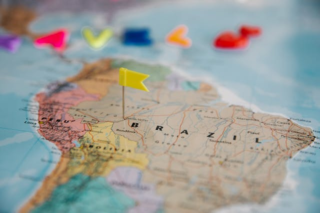
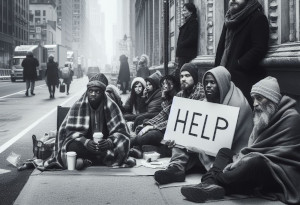

Confira o que está bombando!

PALAVRA DA EXPECIALISTA: Raphaella Nogueira Paixão | Istagram | O desafio de reduzir as desigualdades entre as regiões do Brasil.
O desafio de reduzir as desigualdades entre as regiões do Brasil.
Desafios para combater o aumento das ISTs entre os jovens.
O uso excessivo de telas entre as crianças no Brasil.
Medidas para o enfrentamento da recorrência da insegurança alimentar no Brasil.
O desafio para promover a inclusão do portador do vírus HIV.
Os desafios do combate ao tabagismo entre os jovens.
O trabalho infantil na sociedade brasileira.

Desafios da inserção da população de rua no Brasil.
Desafios para Combater o Racismo no Brasil.
Caminhos para combater a intolerância religiosa no Brasil.